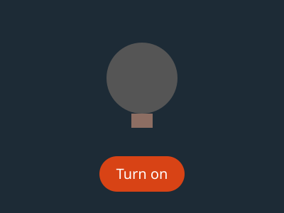
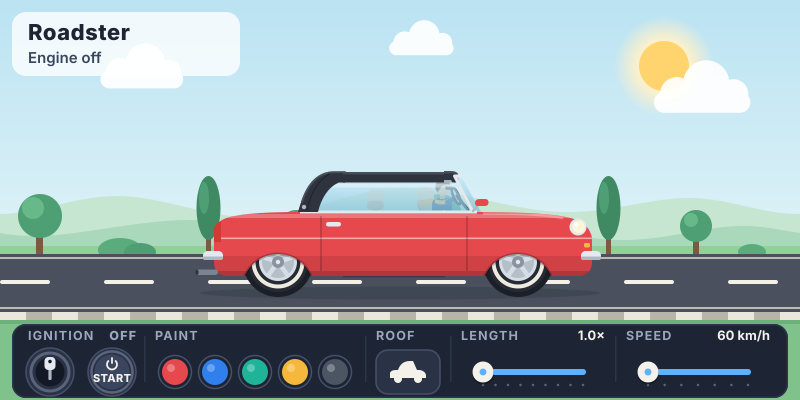

HyperSVG 2.0.0-next.0
Turn an SVG into a hyper drawing.
Parts that respond, with behavior you can read, check, change and reuse.
The lamp on this page is one .svg file. In a plain picture it stands still. Here the HyperSVG
player runs it: press its switch, or Tab to it and press Enter.

01
Two files: a drawing and its decisions
The SVG holds the artwork. A few marks name the parts that respond. The JSON says what a person can do and what each part shows. There is no program code in either file.
Hover or focus a highlighted word to see the part it drives.
Loading…Loading…02
Change it
Edit the files, then press Apply. The player checks the raw files before it plays them, just as it does for any file it is handed. A mistake comes back as the engine's own code and message.
03
Settings and events
A HyperSVG lists its inputs, so a page can build its own panel. This panel comes from
element.inputs(). The page and the lamp's own switch change the same lit; the latest
change wins. Every change arrives as hsvg:changed, and the switch also sends hsvg:switched.
Inputs
Events
04
Two outputs from one source
A HyperSVG is for inside a page. An Experience is for something a person opens on its own.
<img src="lamp.svg"> A still picture. Any SVG viewer shows it.<hypersvg-asset src="lamp.svg"> The same file, live.Pelican Post, as an Experience
One .html page with the player inside. It runs on its own, even offline: fourteen scenes
around one hub, with a four-page comic, a lesson and a quiz, a race and a bike to build.
05
One file, three cars
The same car.svg, placed three times with different settings. The three share one
player, and each keeps its own state. Turn a key, press Start, fold a roof.

<hypersvg-asset src="car.svg" length="1.4" colour="ocean" roof-open></hypersvg-asset>06
Next
npx @hypersvg/core init my-lamp
npx @hypersvg/core check my-lamp
npx @hypersvg/core pack my-lamp out